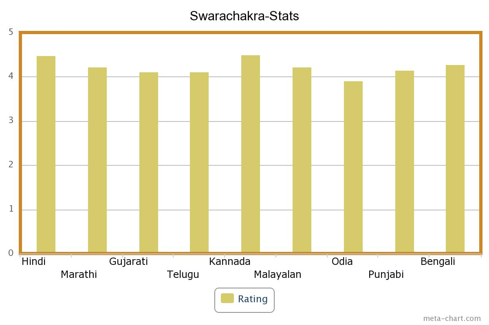

Swarachakra Resources
Relevant resouces for Text-Entry study can be found on this page.

Swarachakra Stats (As of June 27)
| Hindi | Marathi | Gujarati | Telugu | Kannada | Malayalam | Odia | Punjabi | Bengali | Overall | |
|---|---|---|---|---|---|---|---|---|---|---|
| Launch Date | 09/06/13 | 19/08/13 | 25/10/13 | 02/01/14 | 07/01/14 | 09/01/14 | 26/02/14 | 26/02/14 | 20/05/14 | |
| Downloads | 7,064 | 28,676 | 6,008 | 1,766 | 1,784 | 5,153 | 1,097 | 2,446 | 1,033 | 55,027 |
| Rating | 4.48 | 4.22 | 4.11 | 4.12 | 4.51 | 4.23 | 3.92 | 4.15 | 4.28 | 4.24 |
| Words Typed | 1,66,757 | 8,09,568 | 73,690 | 5,957 | 7,919 | 33,970 | 2,997 | 31,096 | 6,573 | 11,38,527 |
| Raters | 174 | 1,064 | 149 | 43 | 47 | 70 | 25 | 48 | 25 | 1,645 |